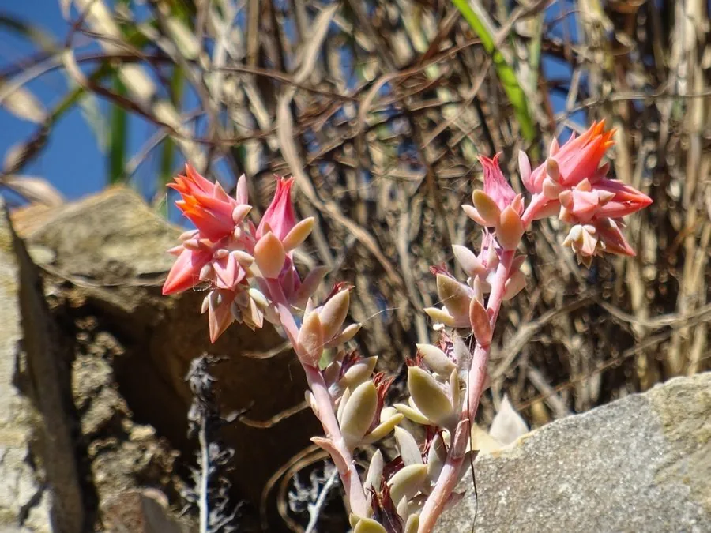

多肉植物 · 植物界
特玉莲 Echeveria runyonii

景天科拟石莲花属多肉，叶片向上反卷、造型奇特，灰白色带白粉，易群生，原产墨西哥，是辨识度很高的品种。
- 分类
- 门被子植物门纲木兰纲目虎耳草目科景天科属拟石莲花属
- 栖息环境
- 墨西哥塔毛利帕斯州干旱山地，喜光、干燥、通风
- 地理分布
- 原产墨西哥，世界各地盆栽栽培，中国各地多肉市场常见
- 保护级别
- 暂无评估
物种志
特玉莲为景天科拟石莲花属多肉植物，株高 10–15 厘米，叶片匙形，肉质肥厚，灰绿色至灰白色，表面覆白粉，叶缘明显向上反卷、略呈波浪状，螺旋排列成莲座，直径 10–20 厘米。花葶自叶腋抽出，花小，橙红色，花期秋季；果实为蓇葖果。
特玉莲原产墨西哥塔毛利帕斯州的干旱山地，喜阳光充足、凉爽干燥和通风良好的环境，耐旱怕积水，夏季高温时进入休眠。它叶片反卷的造型十分独特，在光照充足、温差大的环境下叶缘会泛出粉红色。特玉莲容易群生，母株基部会不断萌发小侧芽，栽培以颗粒土为主，叶插和分株繁殖都很容易，群生后紧凑的莲座观赏效果更佳。
形态与习性
- 株高10–15 厘米，莲座直径 10–20 厘米
- 花期秋季，花小，橙红色
- 果期花后结蓇葖果
- 光照喜充足阳光，夏季高温需遮阴
- 水分耐旱，见干见湿，忌积水
- 土壤颗粒为主、排水良好的矿质土
- 繁殖叶插、分株
- 主要用途盆栽观赏、多肉拼盘
趣味知识
- 特玉莲的叶片向上反卷、略呈波浪状，造型在拟石莲花属中十分独特。
- 它容易群生，母株基部会不断萌发小侧芽。
- 光照充足、温差大时，特玉莲的叶缘会泛出粉红色。
- 特玉莲叶插和分株都容易成活，是新手也能养好的品种。